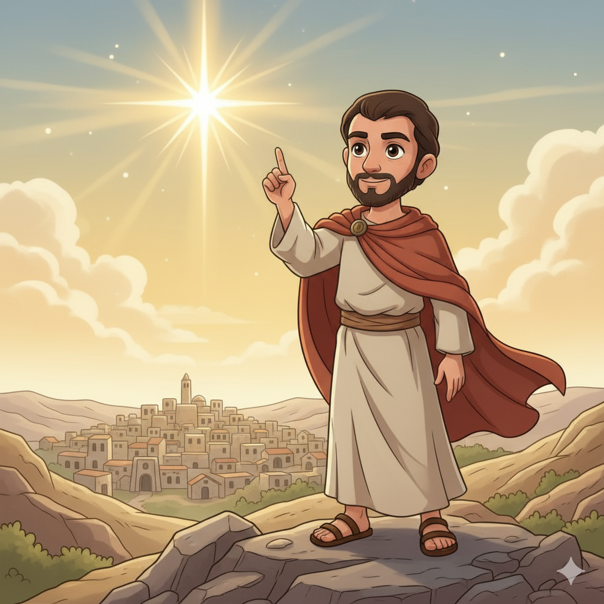
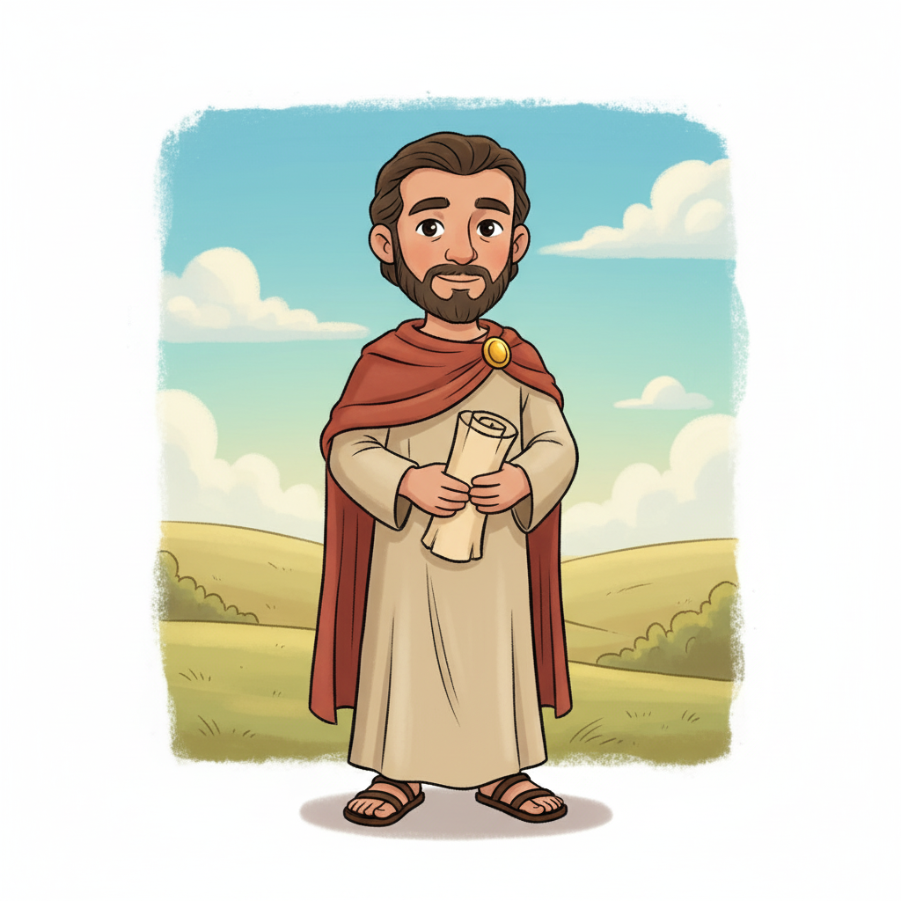
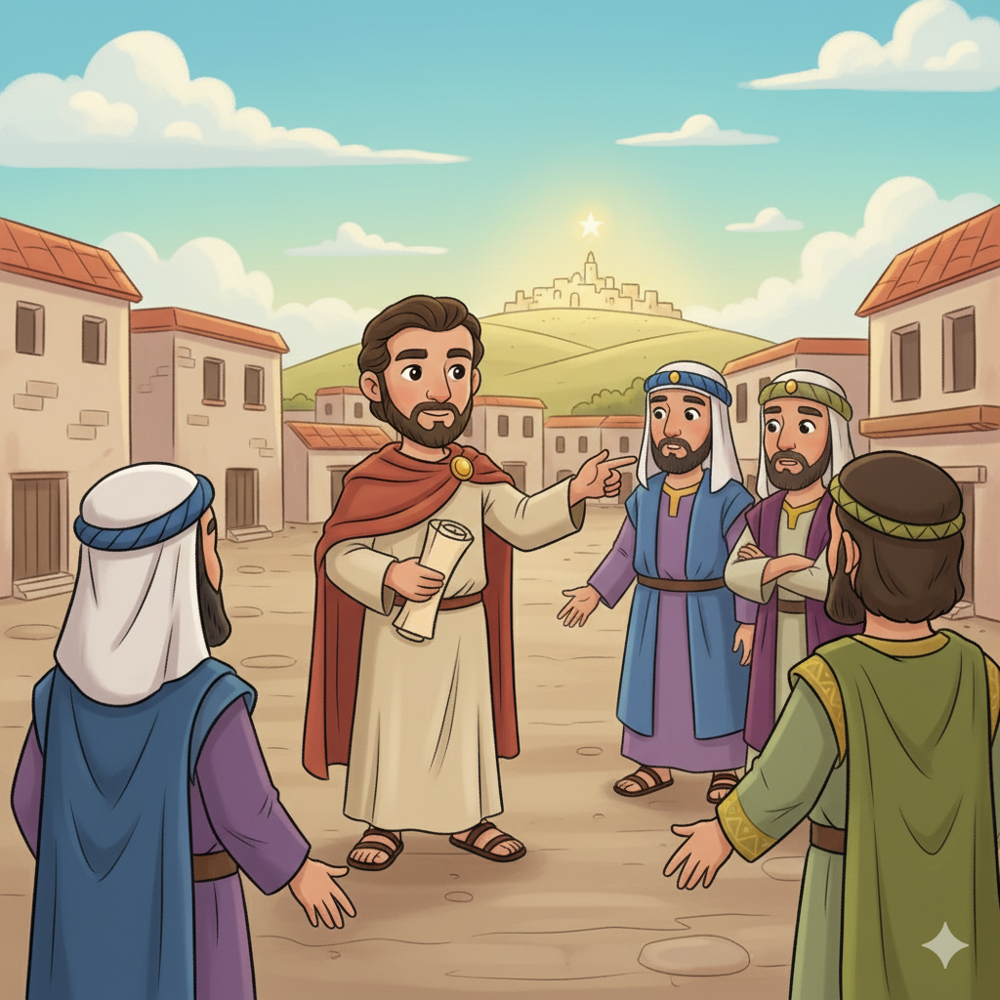
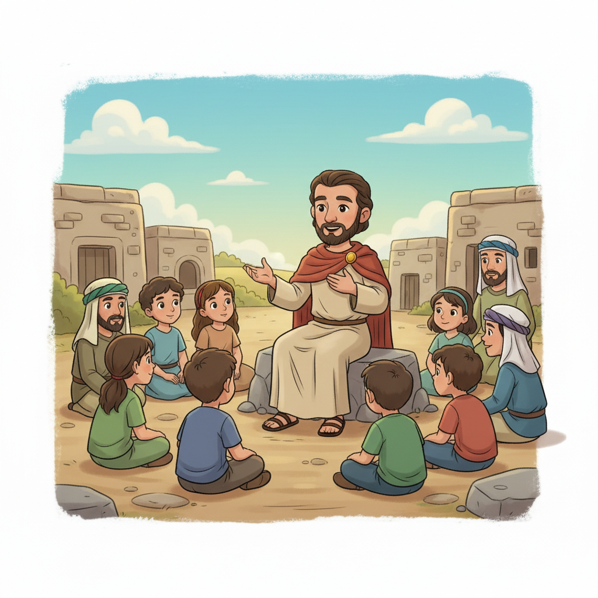
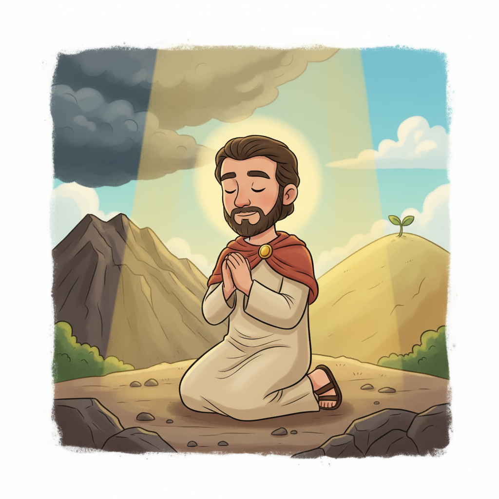
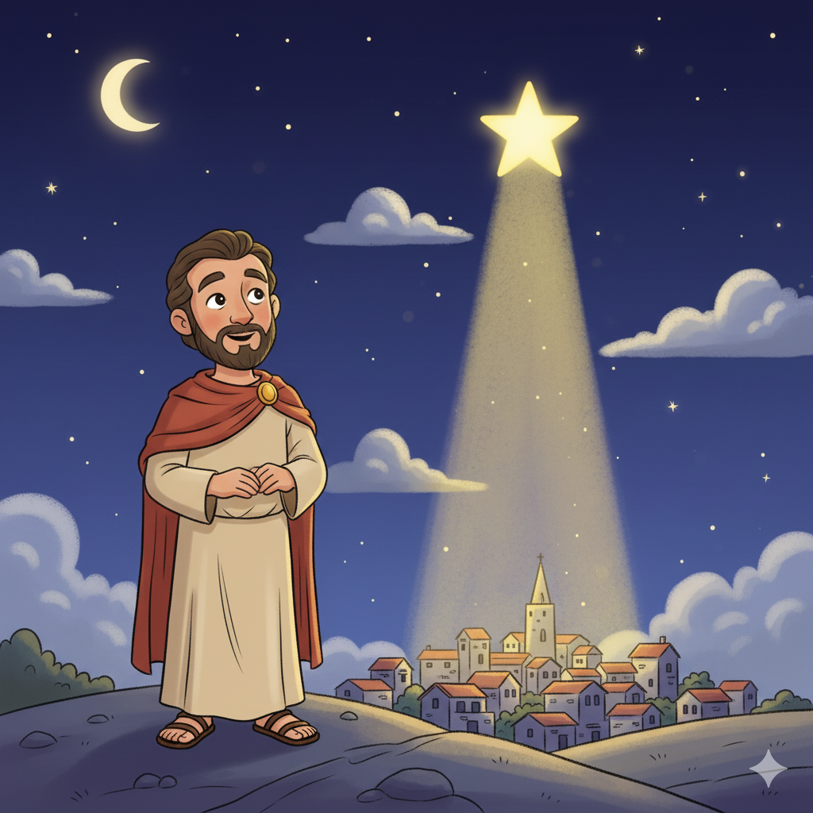

Justiça, Misericórdia e a Profecia de Belém — Um Resumo Visual para Crianças
Não precisa de mil regras complicadas,
Nem de rituais ou ofertas exageradas.
Deus já disse tudo em três palavras claras:
Justiça, bondade e humildade — são as mais raras!
Praticar justiça, amar a misericórdia,
E andar humildemente — essa é toda a teoria!
📖 Miqueias 6:8 — "O que o Senhor requer de ti: que pratiques a justiça, e ames a misericórdia, e andes humildemente com o teu Deus."
Setecentos anos antes de Ele nascer,
Miqueias disse onde Deus viria aparecer!
"Belém pequena, de onde sairá o governante,
Cujas origens são desde os tempos distantes!"
Quando os magos perguntaram onde estava o Rei,
O sacerdote abriu Miqueias e mostrou: "É aqui!"
📖 Miqueias 5:2 — "E tu, Belém Efrata... de ti me sairá o que há de reinar em Israel." (Citado em Mateus 2:6!)
"Quem é como o Senhor?" — o próprio nome de Miqueias pergunta!
Nenhum deus existe que perdoa assim, que restaura e abençoa!
Ele lança nossos pecados no fundo do mar azul,
E os pisa com os pés, sem guardá-los — isso é o que é Jesus!
O perdão de Deus não arquiva o erro para cobrar depois,
Ele o joga no mar tão fundo que não aparece mais!
📖 Miqueias 7:19 — "Tornará a ter misericórdia de nós; pisará aos pés as nossas iniquidades; e lançarás todos os nossos pecados nas profundezas do mar."
⚖️
"O que o Senhor requer de ti: que pratiques a justiça, e ames a misericórdia, e andes humildemente com o teu Deus."
Miqueias 6:8
Em três frases, Miqueias resumiu tudo o que a Bíblia ensina sobre como viver. Jesus disse o mesmo de forma diferente: "Amar a Deus de todo coração e amar o próximo como a si mesmo" (Mt 22:37-40). Miqueias 6:8 e Jesus apontam para a mesma direção!
Miqueias era de Moresete, uma pequena aldeia no interior de Judá. Não era da corte, não era sacerdote — era um homem do campo. Seu nome significa "Quem é como o Senhor?", e o próprio livro termina respondendo: ninguém! Ele profetizou durante os reinados de Jotão, Acaz e Ezequias (735–700 a.C.).
📖 Leia na Bíblia — Miqueias 3:8
"Mas eu estou cheio de poder, do Espírito do Senhor, e de juízo e força, para declarar a Jacó a sua transgressão."
Os alvos das denúncias de Miqueias eram os que deveriam liderar com justiça: juízes que aceitavam suborno, sacerdotes que ensinavam por dinheiro, e profetas falsos que pregavam só o que as pessoas queriam ouvir. Miqueias os confrontou sem rodeios!
📖 Leia na Bíblia — Miqueias 3:11
"Os seus chefes julgam por suborno, os seus sacerdotes ensinam por interesse, os seus profetas profetizam por dinheiro."
Os ricos cobiçavam e roubavam as casas e os campos dos mais pobres (2:2). Era uma época de prosperidade material — mas construída sobre exploração. Miqueias falou em nome dos que ninguém ouvia, exatamente como Amós havia feito ao norte.
📖 Leia na Bíblia — Miqueias 2:2
"Cobiçam campos e os roubam, e casas, e as tomam; assim oprimem o homem e a sua casa."


📖 Leia em casa!
Miqueias tem 7 capítulos. Cap. 5:2 tem a profecia de Belém; cap. 6:8 tem o versículo mais famoso; cap. 7:18-19 tem uma das mais belas declarações de perdão da Bíblia!
⚖️ Ciclo 1 (Cap. 1–2): Julgamento e Esperança
Miqueias anuncia o julgamento que vem sobre Samaria e Jerusalém por causa da idolatria e da exploração dos pobres. Os ricos roubam casas e campos. Mas termina com uma promessa: um "Abre Caminho" que irá à frente do povo reunido de volta para Deus!
📖 Miqueias 2:13 — "Subirá o que abre o caminho diante deles... e o Senhor à sua frente."
🌟 Ciclo 2 (Cap. 3–5): Os Líderes e o Rei de Belém
Miqueias condena os líderes corruptos e profetiza que Jerusalém será arrasada. Mas então vem a visão mais gloriosa: na era messiânica, as nações virão a Sião para aprender os caminhos de Deus, as espadas virarão arados — e de Belém sairá o grande Pastor de Israel!
📖 Miqueias 5:2 — "E tu, Belém Efrata... de ti me sairá o que há de reinar em Israel."
💜 Ciclo 3 (Cap. 6–7): O Tribunal de Deus e o Perdão
Deus "processa" Israel como num tribunal: "O que te fiz? Em que te cansei?" Depois vem o versículo mais famoso (6:8). O livro termina com a mais bela declaração de perdão: Deus lança os pecados nas profundezas do mar e ninguém é como Ele!
📖 Miqueias 7:19 — "Lançarás todos os nossos pecados nas profundezas do mar."
Miqueias 6:8 resume em três imperativos tudo o que Deus quer: agir com justiça (na vida prática), amar a misericórdia (no coração) e andar humildemente com Deus (no relacionamento). Jesus disse que esses três são o coração de toda a Lei (Mt 22:37-40)!
📖 Miqueias 6:8
"Que pratiques a justiça, e ames a misericórdia, e andes humildemente com o teu Deus."
Miqueias 7:19 diz que Deus lança nossos pecados "nas profundezas do mar". Não arquiva para cobrar depois. Não fica lembrando. Joga fora de vez! Esse é o perdão de Deus — total, definitivo e irrecuperável.
📖 Miqueias 7:18
"Quem é um Deus como tu, que perdoa a iniquidade e passa por cima da transgressão?"
Miqueias 5:2 é a única profecia bíblica que indica o lugar exato do nascimento do Messias. 700 anos antes, Deus já havia escolhido Belém. Quando os magos chegaram, o rei Herodes convocou os sacerdotes — e eles abriram Miqueias!


Miqueias falou verdades duras para quem estava no poder: juízes, sacerdotes e profetas que usavam a religião para se beneficiar enquanto oprimiam o povo. O livro mostra que Deus responsabiliza os líderes de forma especial pela forma como tratam os vulneráveis.
📖 Miqueias 3:1
"Ouvi, pois, cabeças de Jacó, e príncipes da casa de Israel: Não é da vossa obrigação conhecer o juízo?"
No meio do julgamento, Miqueias aponta para além do momento presente: um Governante perfeito está a caminho. Não de Jerusalém — mas de Belém, a pequena cidade de Davi. Ele pastoreará o povo "no poder do Senhor" e sua grandeza chegará aos confins da terra!
📖 Miqueias 5:4
"E ele estará e apascentará o rebanho na força do Senhor... e este será a paz."
🌟 Lição Principal: Deus é ao mesmo tempo Juiz e Pai amoroso. Ele não tolera injustiça — especialmente dos líderes. Mas também joga os nossos pecados no fundo do mar quando nos arrependemos. E preparou tudo — até a cidade do nascimento do Salvador — com séculos de antecedência!
🎄 Os sacerdotes usaram Miqueias no Natal: Quando os Magos chegaram à Jerusalém perguntando onde nasceria o Rei dos Judeus, Herodes chamou os sacerdotes — e eles abriram Miqueias 5:2 para responder: "Em Belém da Judeia!" (Mateus 2:5-6). A profecia de 700 anos guiou os Magos até Jesus!
🔁 Igual a Isaías — palavra por palavra: Miqueias 4:1-3 e Isaías 2:2-4 são praticamente idênticos — a visão das espadas virando arados e todas as nações vindo a Sião. Dois profetas contemporâneos receberam a mesma visão independentemente!
📜 Citado por Jeremias 100 anos depois: Em Jeremias 26:18, os anciãos de Judá citam Miqueias 3:12 para defender Jeremias de ser morto. Eles disseram: "Miqueias disse a mesma coisa no tempo de Ezequias, e o rei não o matou!" O livro de Miqueias era tão conhecido que foi usado como argumento jurídico!

Miqueias 5:2 — "de ti, Belém, me sairá o que há de reinar em Israel" — é a única profecia do AT que indica o lugar exato do nascimento do Messias. Mateus 2:6 mostra os sacerdotes citando exatamente esse versículo para os Magos.
Miqueias 6:8 resume o que Jesus chamou de "os pontos mais importantes da Lei" (Mt 23:23): justiça, misericórdia e fidelidade. Jesus veio para cumprir e encarnar exatamente o que Miqueias pregou!
Miqueias 7:19 — "lançarás nossos pecados nas profundezas do mar" — aponta para o perdão completo que Jesus conquistou na cruz. João 1:29 confirma: Jesus é o "Cordeiro de Deus que tira o pecado do mundo"!
Os sacerdotes guiam os Magos com Miqueias
"E tu, Belém, terra de Judá, de modo algum és a menor entre os príncipes de Judá; porque de ti sairá o Guia que há de apascentar o meu povo Israel."
📖 Mateus 2:6 (citando Miqueias 5:2)
700 anos depois de Miqueias escrever, os sacerdotes de Herodes abriram exatamente esse versículo. Deus havia marcado o endereço do Salvador na Bíblia muito antes de Ele nascer!
Converse com sua família, turma ou professor sobre essas perguntas!
⚖️
Miqueias 6:8 diz: praticar justiça, amar misericórdia, andar humildemente. Qual dos três você acha mais fácil de fazer? E qual é o mais difícil? Por quê?
🌊
Deus joga nossos pecados no fundo do mar. Você já se sentiu com vergonha de algum erro e achou que Deus não poderia perdoar? Como Miqueias 7:19 muda o jeito de você enxergar isso?
🌟
Miqueias profetizou Belém 700 anos antes. O que isso diz sobre o planejamento de Deus? Tem algo na sua vida que parece sem direção — como você pode confiar que Deus já vê o futuro?
Escolha um desafio (ou faça os três!) e seja um explorador da Bíblia!
⚖️
Esta semana, escolha um ato concreto de justiça, um de misericórdia e um de humildade. Anote o que você fez cada dia. No final da semana, compartilhe com alguém o que aprendeu!
🌊
Escreva num papel algo que você precisa pedir perdão a Deus. Ore, confesse — e depois rasgue o papel em pedaços. Deus jogou no fundo do mar. Não precisa mais carregar isso!
✍️
Escreva "Praticar a justiça, amar a misericórdia e andar humildemente com teu Deus" e cole em algum lugar visível. Deixe esse versículo guiar suas decisões esta semana!
Trilho Kids | Desenvolvido com ❤️ para crianças © 2025